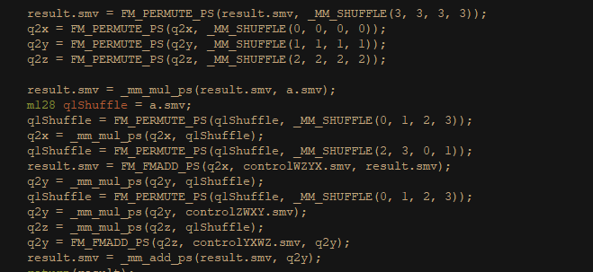
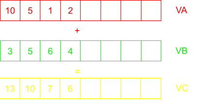
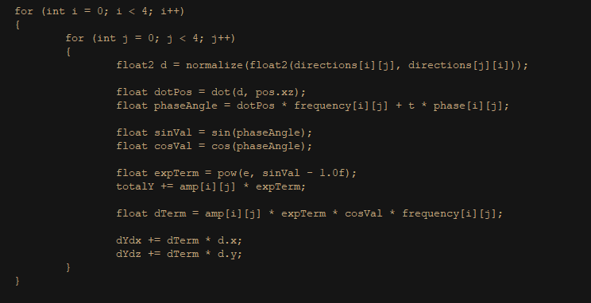
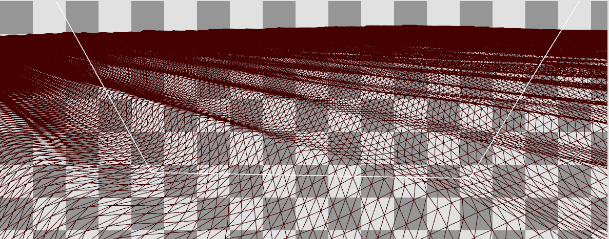
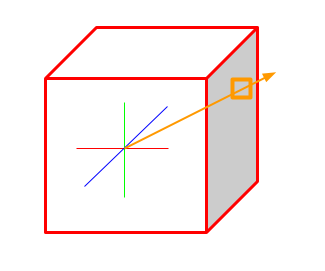
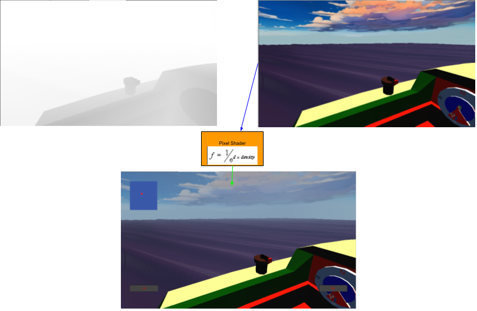

Sailing
- Platform: PC
- Tools: WinAPI, C++, DirectX11, RADDebugger, Emacs, RenderDoc.
- Link to GitHub Source Code
In this project I've been developing a game where you sail around an ocean using realistic-ish sailing mechanics to avoid obstacles and sail from island to island. The project is currently in it's prototyping stage with time being spent fleshing out the sailing mechanics and various obstacles with the goal of developing a minimum viable product.
Responsibilities
- Design and develop sailing mechanics.
- Flesh out custom API's for game/platform frameworks, memory management, and file loading.
- Implement textures and materials from file formats to be loaded onto meshes.
- Separate platform and gameplay code to avoid immediate mode rendering.
- Develop a custom platform abstracted math library utilizing SIMD for performance benefits.
- Simulate waves using Sum of Sines with accurate lighting.
Math, math and more math
Development of this project started with a reimplementation of a math library. Since a big part of this development is to create separated game and platform specific code, it was imperative that I have a math library that supports this. Rather than just using DxMath (a specific library used for Windows programs) or using one found online, I thought it would be beneficial to acutally take the time to understand what was going on under the hood of these librarys. So with DXMath as a reference, I started to develop my own SIMD math library for the functions that were the most important in rendering a 3D scene. Devlopment of this library took about a months time and I was developing the basic game structure alongside it.
This math library needed to be fast for the calculations I intended to perform. This meant utilizing performance intrinsics known as Single Instruction, Multiple Data or SIMD. This is essentially when your processor takes some sort of math calculation, an addition for example, and applies it to mulitple data points. Since 3D is based in Vector Spaces, the mathematical manipulation of multiple pieces of data (or floating point values) is incredibly commonplace and therefore house a wide variety of applications for this process.


For a very brief explanation as to how this works, imagine we want to add two vectors together. While it varies depending on the type of CPU architecture you have, you would call into an intrinsic function like _mm_add_ps(v1, v2), where the parameters are two _mm128 (two 4D vectors). Then your computer takes the two parameters, loads them into registers and in a single parallel execution, adds the values together to produce the sum.
Wavessssss
Now onto OnlineResume of the most exciting things I implemented in the past couple of weeks, the visual representation of waves. A huge thanks to Acerola (who if you haven't heard of I definetly recommend checking out) for a really wonderful guide and explanation of this implementation whose video I will link here. For a brief summary of how I implemented it accordingly:
Waves are bascially sine waves, but one sine wave is very predictable and doesn't look very good. So instead we make multiple sine waves, with different amplitudes, frequencies, speeds and wave lengths, and then add them all together based on a point in time. Then we take this value we get from this addition, and add it to the height of the vertex. The image to the right shows the loop inside of my vertex shader which utilizes a couple of buffers such as direction, frequency, and phase of some sine wave values which I randomly generated on the CPU.


Now that we have a giant plane moving based on the sum of sines calculation, it doesn't look very good unless we introduce lighting. Before we even light something, we must get some information from our ocean grid. The most important being the normals of the faces. To get our normals, we refer back to our sum of sines, but now we calculate the partial derivative of the sum of sines calculation to get our tangent and binormal vectors which we then cross to get the normal vector. Refering back to the loop above, the dYdx and dYdz values are what we use to get the binormal and tangent vectors respectively.
Then after transfering that information to our Pixel Shader, we can use it to calculate lighting values such as our labertian diffuse, specular reflections, fresnel
and our reflections. For times sake, skipping over the simpler implementations of diffuse, specular and fresnel, I'm gonna talk about the more interesting implementation
of reflections.
My implementation utilizes whats known as cubemap reflections. Taking the reflection vector of our View vector and the Normal from our plane, we get a vector that points out into
space. We then use this vector to reference a point in a cube map, in this case our skybox which we grab the color from and then add it to our final output with
the rest of our lighting calculations.

Post processed fog
To improve my visuals as well as hide the seams created by my skybox and the edge of the waves, I found it important to implement a post process fog to simulate subsurface scattering.

Post processing is an affect in 3D graphics where you apply your affects to the texture of the image you render to. So, rather than using the simple implementation of my pipelines swap chain of rendering directly to a back buffer and presenting that back buffer, what I do instead is write to a 2D texture, then through a separate pixel shader, apply my effects to the texture and then present the edited 2D texture to the Output Merger.
Fog is a fairly simple implentation. Using our Depth Stencil inside of our Pixel Shader, we can grab a distance which we can than use a simple exponential fog formula to calculate the amount of fog per pixel.